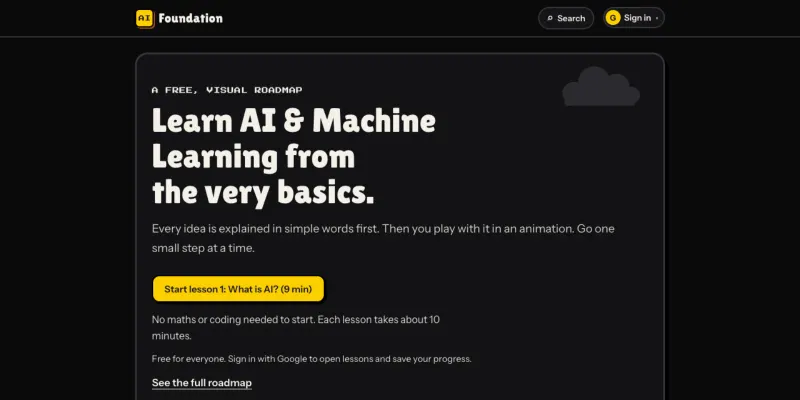

liveAI Foundation
93 free, visual lessons on AI engineering: KV cache, prompt caching, RAG retrieval and reranking, tool calling, evals and guardrails. Each pairs a plain-English explanation with an interactive demo, runnable Python and a quiz.
JavaScript PythonFirebase